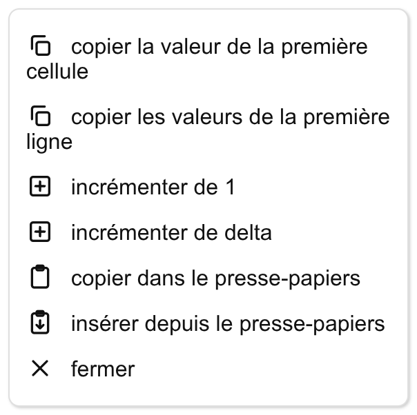
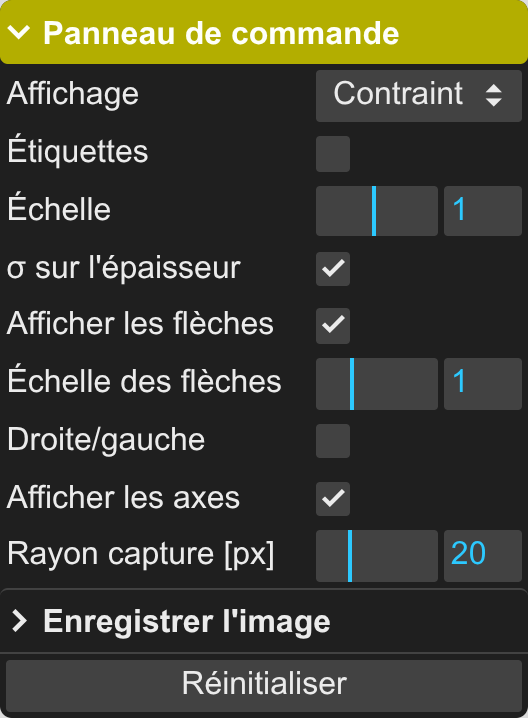
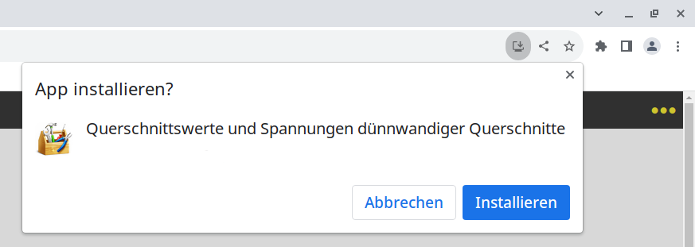

▶ Ouvrir duennQs – calculer les caractéristiques et contraintes de sections à parois minces
Présentation
Système de coordonnées et conventions de signe
Exemple
Conseils d'utilisation de l'app
Tableaux et menu contextuel
Fichiers, PDF et sauvegarde automatique
Représentation 2D (onglet Système)
Représentations 3D
Notations
Paramètres
Installer l'app sur le bureau
Compatibilité
Aide : mon clavier n'a pas de touche moins, clavier virtuel
Contact et signalement d'erreurs
Avec cette application web, tu peux calculer les caractéristiques et les contraintes de sections à parois minces. Le modèle de ligne moyenne (modèle filaire) est utilisé et résolu par la méthode des éléments finis [1], [2]. Comme pour un portique ou un treillis, la section est décrite par des éléments droits reliés entre eux par des nœuds. Chaque élément doit être relié à au moins un autre élément : aucun élément ne doit rester « isolé » dans la section. De chaque élément, il doit exister un chemin vers tous les autres.
Tu saisis les coordonnées des nœuds dans un repère auxiliaire ȳ-z̄ dont l'origine peut être choisie librement. Chaque élément a un nœud de début et un nœud de fin et représente exactement des répartitions quadratiques de la contrainte de cisaillement ; un raffinement n'est donc pas nécessaire. Si tu regardes le long de l'élément de son début vers sa fin, le côté droit de l'élément se trouve à ta main droite.
Comme les éléments peuvent avoir des caractéristiques de matériau différentes, il faut indiquer des valeurs de référence pour le module d'élasticité et le coefficient de Poisson. Les caractéristiques calculées sont des valeurs idéales rapportées à ces valeurs de référence. Si tu les utilises pour une barre dans un logiciel de calcul de structures, indique-y les mêmes valeurs de référence comme données de matériau.
Les contraintes normales dues à N, My et Mz sont calculées avec les formules habituelles de la mécanique, en supposant que les sections planes restent planes (Bernoulli), et celles dues à Mω au moyen de l'ordonnée de gauchissement. Les contraintes de cisaillement sont positives lorsqu'elles agissent dans le sens du repère local de l'élément. Le sens local positif va du nœud de début au nœud de fin.
Caractéristiques du programme :
Conventions de signe des efforts

Conventions de signe de l'élément
Cet exemple est traité dans [2]. Les données de la section sont chargées automatiquement au premier démarrage de l'app, avec les efforts Vz = 500 kN et My = 600 kNm.

Dans [2], la section est en outre étudiée avec les efforts suivants :
Mxp = 250 kNm ; Mxs = 150 kNm ; Mω = 10 kNm²
Vy = 1000 kN ; Vz = 500 kN
Matériau : E = 21 000 kN/cm² ; ν = 0,3
L'app comporte les onglets Saisie, Résultats, Système, 3D, Info et ꔷꔷꔷ (paramètres). Si tu passes la souris sur un bouton ou que tu appuies longuement dessus avec le doigt, un court texte d'aide apparaît.
La virgule et le point sont admis comme séparateur décimal, un séparateur de milliers ne l'est pas.
Le texte du champ texte libre est repris dans la sortie PDF, par exemple pour l'énoncé et ton nom. Des mises en forme HTML simples comme <b>gras</b> sont possibles.
Si tous les éléments ont les mêmes données de matériau est coché, les valeurs de référence s'appliquent à tous les éléments et les colonnes E et ν du tableau des éléments sont masquées. Avec fy,Rd, les contraintes équivalentes dépassées sont marquées en rouge dans l'onglet Résultats ; en 3D, fy,Rd peut être affiché avec la contrainte équivalente.
Calculer lance le calcul, puis l'app passe à l'onglet Résultats. Si le bouton Calculer est mis en couleur, la saisie a été modifiée depuis le dernier calcul.
Tu modifies le nombre de lignes des tableaux des nœuds et des éléments avec − et + à côté de Nombre de nœuds et Nombre d'éléments, ou en saisissant le nombre. Les lignes sont ajoutées ou supprimées en fin de tableau.
Dans le tableau des éléments, + dans la colonne No insère une ligne au-dessus, la corbeille supprime la ligne. Les deux actions peuvent être annulées et rétablies. Le tableau des nœuds ne le propose volontairement pas : nod1 et nod2 des éléments renvoient aux numéros de nœuds, qui se décaleraient sinon sans qu'on le remarque. Les numéros restent ainsi conformes à ton croquis sur papier.
Pour accélérer la saisie, tu peux copier et générer des valeurs dans les tableaux. Sélectionne
un bloc en faisant glisser la souris sur les cellules avec le bouton droit enfoncé. Au
relâchement, le menu contextuel apparaît.
Écrans tactiles : active d'abord Autoriser la sélection de cellules au doigt
dans l'onglet ꔷꔷꔷ. Sélectionne ensuite les cellules en les balayant avec le doigt ou le stylet.
Quand tu le lèves, le menu contextuel apparaît.

Menu contextuel
Remarque : une souris et/ou un clavier Bluetooth peuvent aussi être connectés aux tablettes et aux smartphones.
Les boutons au-dessus de la saisie te permettent de commencer une nouvelle saisie, de lire une saisie enregistrée ou d'enregistrer la saisie actuelle. Les fichiers de saisie ont l'extension .duennqs (sous Android .duennqs.json) ; les anciens fichiers .txt peuvent toujours être lus. Tu peux aussi simplement faire glisser un fichier dans la fenêtre de l'app avec la souris. S'il y a des modifications non enregistrées, l'app demande confirmation avant une nouvelle saisie ou l'ouverture d'un autre fichier.
Dans l'onglet Résultats, le bouton PDF enregistre les résultats dans un fichier PDF, avec la saisie et le dessin de la section.
La saisie actuelle est sauvegardée automatiquement dans le navigateur, par exemple quand l'app passe en arrière-plan ou est fermée, et elle est restaurée au démarrage suivant. Cela ne remplace pas l'enregistrement dans un fichier.
Lorsqu'une nouvelle version de l'app est disponible, l'app te demande si elle doit être rechargée. La saisie actuelle est conservée.
L'onglet Système montre la section dans le plan ȳ-z̄ avec le centre de gravité, les axes principaux et le centre de cisaillement. Le réticule affiche les coordonnées et s'accroche aux nœuds, au centre de gravité et au centre de cisaillement ; aux nœuds, il indique aussi l'ordonnée de gauchissement ω. Numéros affiche ou masque les numéros des nœuds et des éléments, SVG enregistre le dessin dans un fichier SVG.
L'onglet 3D montre les résultats dans l'espace. Les valeurs sont portées dans la direction de l'axe de la barre x. À la souris, tu fais tourner (bouton gauche), déplaces (bouton droit) et zoomes (molette) la vue ; avec deux doigts, tu la fais tourner et zoomes. Avec un doigt, tu affiches des valeurs ou déplaces la vue ; le bouton en bas à gauche bascule entre les deux. Le réticule s'accroche aux points de la grandeur représentée et affiche sa valeur.
Les réglages se trouvent dans le Panneau de commande. Il n'affiche que les options qui correspondent à la représentation choisie.

Panneau de commande
Incidences nodales des éléments :
nod1 = numéro du nœud au début de l'élément
nod2 = numéro du nœud à la fin de l'élément
Ageom = aire géométrique de la section, sans tenir compte des données de matériau.
Contraintes de cisaillement dues à la torsion primaire Mxp :
τxs0,L = contrainte de cisaillement de la part section ouverte, côté gauche,
linéaire sur l'épaisseur de l'élément
τxs0,R = contrainte de cisaillement de la part section ouverte, côté droit
τxs1 = contrainte de cisaillement de la part section fermée, constante sur
l'épaisseur de l'élément
Contraintes de cisaillement dues à l'effort tranchant et à la torsion secondaire
Mxs :
τxsa = contrainte de cisaillement au début de l'élément a
τxsm = contrainte de cisaillement au milieu de l'élément m
τxse = contrainte de cisaillement à la fin de l'élément e, toutes constantes sur
l'épaisseur de l'élément
Toutes les autres notations par analogie.
Dans l'onglet ꔷꔷꔷ, tu règles la langue (Language), l'unité de longueur, la taille de police, la sélection de cellules au doigt ainsi que les couleurs des tableaux et la couleur d'accentuation. L'unité de contrainte suit l'unité de longueur : mm → N/mm² ; cm → kN/cm² ; m → MN/m². Les valeurs saisies sont converties ; il faut ensuite recalculer. Les grandes tailles de police sont prévues pour la projection avec un vidéoprojecteur.
Tu peux enregistrer les paramètres comme valeurs par défaut dans le stockage local du
navigateur ; ils sont alors de nouveau disponibles après un redémarrage. Le bouton en dessous
supprime à nouveau ces valeurs par défaut.
Le stockage local (local storage) n'est pas un cookie. Cette application web effectue tous les
calculs localement dans le navigateur en JavaScript. Aucune donnée n'est échangée avec un
serveur web ; après le démarrage de l'app, une connexion réseau n'est donc plus nécessaire.
Cette application est programmée comme application web (web app) ; tu peux donc l'installer sur le bureau sous tous les systèmes d'exploitation. Une icône est créée et l'app se comporte comme une app installée depuis un store. duennQs continue de s'exécuter dans le navigateur, mais sans éléments comme la barre d'adresse. L'installation diffère selon le système d'exploitation, sa version et le navigateur.
Sous Android, une fois duennQs ouvert dans le navigateur Chrome, choisis Installer l'application dans le menu de l'application (menu à trois points) en haut à droite et confirme la boîte de dialogue. Une nouvelle icône nommée duennQs apparaît alors sur le bureau.
Sous iOS, utilise le navigateur Safari. La commande s'appelle Sur l'écran d'accueil (symbole de partage, puis le symbole avec le plus).
Sous Microsoft Windows, la procédure est semblable à celle d'Android. Dans le navigateur Edge, le menu de l'application (menu à trois points) contient la section suivante :

Les versions récentes de Chrome peuvent te demander directement si tu veux installer l'app, voir le symbole à droite de la barre d'adresse :

Sous macOS, utilise Microsoft Edge ou Google Chrome pour l'installation.
Firefox ne prend pas en charge l'installation pour le moment. Sous Windows et Linux, tu peux à la place passer en mode plein écran avec la touche F11.
Sous Android, iOS et Linux, l'app se désinstalle en supprimant l'icône du bureau. Sous Windows, elle se désinstalle comme un programme normal.
Testé sous Windows 10↑, macOS Catalina 10.15.7↑, Ubuntu 22.04↑, Android 9–16 et iOS 15.7.3↑, chaque fois avec la version actuelle de Chrome, Chromium, Edge, Safari et Firefox. Seules les versions actuelles des navigateurs sont testées et prises en charge.
Sur certains appareils Android, en particulier de Samsung, le clavier numérique n'a pas de touche moins. Malheureusement, la spécification HTML laisse ce choix au fabricant. Dans ce cas, un clavier virtuel supplémentaire est recommandé, par exemple le clavier Google Gboard du Play Store. Après l'installation, il faut encore activer le clavier, de préférence directement dans le Play Store. Ensuite, tu peux passer à tout moment d'un clavier installé à l'autre (symbole en bas à droite du clavier).
Pour les suggestions, les souhaits et le signalement d'erreurs, utilise l'adresse e-mail statikverstehen@web.de. Pour signaler une erreur, joindre une copie du fichier de saisie est généralement utile.
[1] Matthias Kraus : Computerorientierte Berechnungsmethoden für beliebige Stabquerschnitte des Stahlbaus, thèse de doctorat, Bochum 2005
[2] Matthias Kraus ; Rolf Kindmann :
Finite-Elemente-Methoden im Stahlbau, 2e édition, Ernst W. & Sohn Verlag, 2019
Édition anglaise : Rolf Kindmann ; Matthias Kraus :
Steel Structures: Design using FEM, Ernst W. & Sohn Verlag, 2011